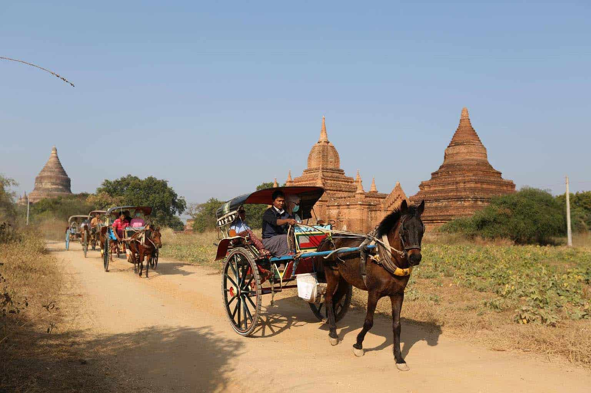

There are quite a few activities that you can do these days in Bagan. From soaring over the temples in a hot air balloon, to sampling some of Myanmar's incredible food, there's something for everyone. We've highlighed some of our favourite spots and activities so that you can plan the perfect trip to one of the world's most amazing sights.
1. Hop on the back of a Horse Cart
One of the more leisurely ways to experience Bagan is by hiring a horse cart and driver for the morning or afternoon. While perhaps not the most comfortable, it is without a doubt the most authentic, with the slow pace allowing you to really appreciate the incredible architecture that surrounds you.

You might have an idea of which temples you’d like to see, but if not then don’t worry, as your driver will have lots of knowledge to share. We’d recommend keeping your ride to a small area so that you don’t end up travelling for long distances between temples.
Our favourite patch to enjoy a horse cart is around Old Bagan, where you can explore Ananda Temple to the West, Gubyaykgyi Pagoda to the South and Taungbi village just North West of the old town.
2. Go to a Cooking Class
A great way to experience a new culture is to learn some of the local recipes of the area. Spend a morning shopping at the nearby food market before heading off to a traditional kitchen where you’ll prepare your very own lunch with a local family.
You’ll get to try your hand at some of the local techniques used in the kitchen while cooking up 5 traditional Myanmar dishes, all under the watchful eye of a head chef.
3. Take an E-Bike Tour
Don’t be scared, these bikes are a fun, easy and quick way to explore Bagan. There are stalls all over the Bagan area where you can rent an E-Bike from but we would recommend visiting a well known shop either on Thi Ri Pyitsaya 4 Street in Nyaung U, or just outside Ostello Bello on Kayay Street in New Bagan.
These bikes have a top speed of about 25km/h and a battery life that will last you all day. To really allow yourself to enjoy the day, we’d recommend hiring a guide as well who will be able to tell you all the ins and outs of the sights you are about to see.
The E-Bike allows you to get to some of the harder to reach temples that a car wouldn’t be able to, while also allowing you to enjoy being outside. We’d advise wearing sunglasses to avoid any sand getting in your eyes.
4. Go on a Three Treasures Excursion
Three Treasures is a social enterprise that offers great tours in and around Bagan. From crafting workshops to photography tours and a whole heap more, these excursions are pretty special.
They get booked up pretty quickly so make sure you reserve something in advance by either contacting them directly or by letting us know your plans.
5. Watch the Sunset/Sunrise from atop a Temple
One of the main reasons that travellers come to Bagan is to witness a sunset or sunrise over the temples. We’d recommend coming up with a clear idea of where you want to be positioned, and get there early, to make sure you get the best seat in town.
Our guide on the best sunsets in Bagan will hopefully give you a pretty clear idea of where to head, but ask around as well and see what others recommend. We’d advise avoiding some of the more popular spots were large coaches filled with tourists tend to go to (Shwesandaw Pagoda definitely falls into this category).
6. Enjoy lunch at Sanon Restaurant
Sanon restaurant is a social enterprise that has been set up as a training school for marginalised youth in the Bagan area. The restaurant itself is located in Nyaung U in a very nicely renovated beer station that provides a lovely respite from the hot midday sun.
We’ve eaten here more times then we care to admit, and have never been disappointed.
The menu is split up into easy to understand pages, ranging from veggie lovers to fish lovers and there’s something too for those with a sweet tooth. The restaurant is open every day of the week so you have no excuse.
7. Ballooning over Bagan
It’s impossible to write up a top activities list in Bagan without including a balloon ride. This really is as good as everyone says, and more.
You’ll wake up in the early hours of the morning and be transported by bus from your hotel to the departure site. Here, there are usually around 20 or so balloons that take to the sky that is picture worthy all by itself (for those unlucky enough not to get a ticket, we’d recommend witnessing this).
The ride takes around 1 hour, and lets you sour over the pagodas in a basket of between 9 and 18 other travellers. The pilot keeps you close to the ground so that you get great views of the temple and amazing photo opportunities.
The landing site changes every time, according to the wind and weather, but you’ll get to enjoy a leisurely breakfast here and a glass of champagne, before being taken back to your hotel.